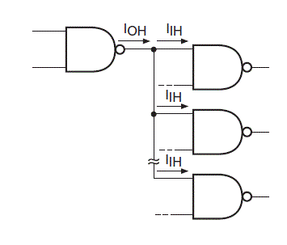
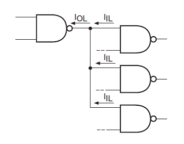
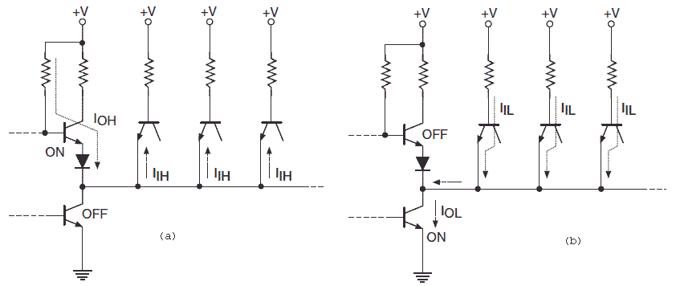

We can illustrate the point further with an example and the diagram above. Suppose the electric current sourcing capability of a NAND gate is IOH when the output of it is in logic high and the inputs of the logic gates which are fed from the output of this logic gate is IIH. We can see this in the diagram also. Now the maximum number of inputs which this output of the logic gate will be able to drive is IOH/ IIH. This will be applicable when the when that output will be in high state. Now considering the case when the output is in the state of logic LOW then the let us take the maximum electric current sinking capability as IOL. And then again just as the previous one the sinking electric current which is fed to all the connected inputs of various logic gates is IIL. We are going to show this in the next diagram.

Now for this case the maximum number of input drives which will be driven by the output of that logic gate will be equal to IOL / IIL. So we have found that the maximum number of logic gate inputs that can be fed from the output of a single logic gate will be IOH / IIH when the logic is high and it will be IOL / IIL when the logic is in low state.
So the number of logic gate inputs which can be driven from the output of a single logic gate is termed as Fan Out of Logic Gates, the only condition is that there must not be any false output. It is a very important characteristic of logic gates of digital electronics as it helps in the designing of various circuit gates. Now in many cases the values of IOH/IIHand IOL / IIL are different, in that case the smaller of the two is taken as Fan Out of Logic Gates and all the calculations are done based on that value.

The above two figures show the actual circuit diagram of a circuit where the output of a single NAND gate which belongs to a standard TTL (Transistor Transistor Logic) logic family feeds the inputs of various NAND gate which belongs to the same logic family. The first figure is for the state when the logic is high and the second figure is during the logic low state. For standard TTL family devices the maximum high state output sourcing electric current and the maximum high state input electric current are 400 mu A and 40 mu A respectively. The same values for low state are 16 μ A and 1.6 μ A respectively. We have discussed about the TTLs in other article.
 by
by